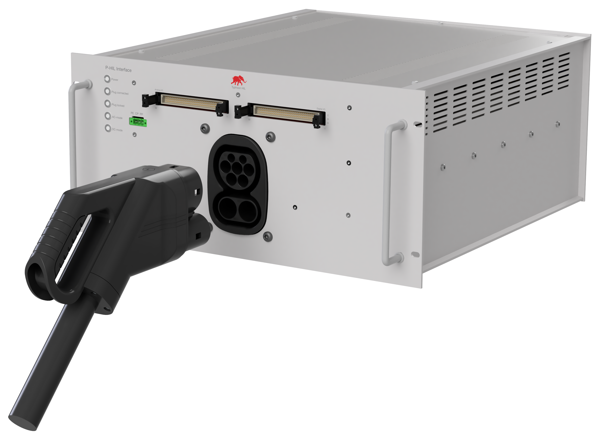
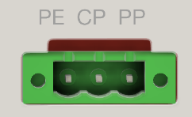
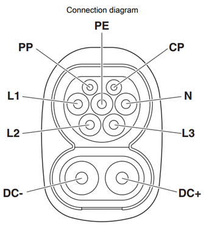
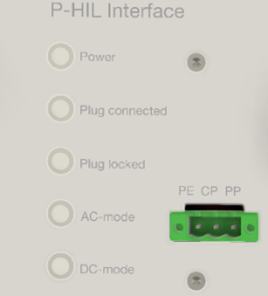
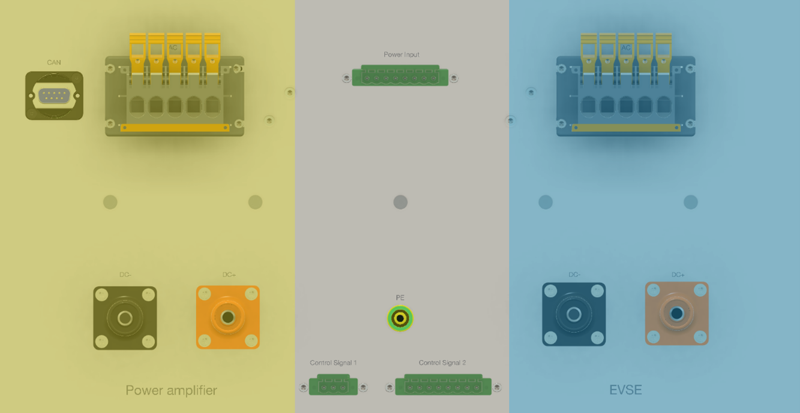

Mechanical
Mechanical guidelines and voltage ratings for the connectors on the HIL Electric Vehicle Charging Interface
P-HIL Interface Front Connector Information

The P-HIL Interface is a device designed for high-voltage current and voltage testing with high precision. On the front side of the device (Figure 1), there are DIN 41612 connectors for connection to the C-HIL, a connector for accessing CP, PP, and PE signals, and a CCS Combo 2 connector.
Pheonix connector
The Pheonix connector acts as a terminal block for direct PE, PP, and, CP connections with external signals, as shown in Figure 2.

Combined charging system type 2 socket CCS-type2
The P-HIL Interface offers a comprehensive array of features tailored to optimize charging operations. Beginning with the CCS Type 2 Combo field, the inlet on the front side is engineered to accommodate both AC and DC charging, compatible with Type 2 AC and CCS vehicle charging connectors (EVSE). Technical specifications include:
- Type of Charging: AC 3-phase / DC
- Rated Voltage: 480 V AC / 1000 V DC
- Rated Current: 32 A AC / 250 A DC
- Temperature Monitoring: AC contacts (PTC chain) / DC contacts (2x PT1000)
- Signal Contacts: CP/PP
- Locking Actuator: 12V or 24V with feedback of locking state

DC Voltage Line
The DC power amplifier and EVCE can be connected for a DC voltage line. Connections to power amplifier and EVCE are on the device's back side. Specifications include:
- Rated voltage: 1500 V DC
- Rated current: 250 A
AC Voltage Line
The P-HIL Interface features an AC power amplifier and EVCE connector for the AC stage. Specifications include:
- Rated voltage: 600 V DC
- Rated current: 32 A
AC/DC switches/breaker
The P-HIL Interface has AC/DC switches to enable functional switching between Power Amplifier mode and EVSE mode. Specifications include:
- Current Rating: 63 A AC / 250 A DC
- Voltage Rating: 600 V AC / 900 V DC
Switching can be interrupted via an I/O signal from the HIL device or via CAN communication. It is possible to install a safe signal reading to the devices via Auxiliary Contacts. At the initial state, the contactors are in the normal open position.
Measurement
Measurement capabilities are integrated into the CCS-type2 socket, covering both AC and DC components. Sensors for voltage and current are seamlessly integrated into the interface, with measurements linked to analog inputs on the HIL-Computer. Key measurement specifications include:
- Current Rating: 100 A AC / 500 A DC
- Voltage Rating: 600 V AC / 900 V DC
- Accuracy: +/- 0.2%
- Bandwidth: 50 kHz
- AC Current sensor: PN: CASR 50-NP
- DC Current sensor: PN: LF510-S
- AC Voltage sensor: PN: CV3-500
- DC Voltage sensor: PN: CV3-1500
The signals of the measured values can be configured to be sent via CAN communication via the integrated microcontroller in the P-HIL Interface. However, this approach results in a loss of real-time measurements, due to the additional signal processing that occurs before sending via CAN. In addition, there is a small error that can occur when reading analog-to-digital converters (ADCs) on the microcontroller.
State LEDs
- Plug connected
- Plug locked
- AC mode
- DC mode
Switching on and off the LEDs, as well as controlling the light intensity, can be performed either via the I/O HIL device or via the CAN protocol.

P-HIL Interface Back Connector Information

On the rear side of the inteface, there are two main sections: Power Amplifier connections (left in yellow in Figure 5) and EVSE connections (right in blue in Figure 5).
On each side, there are two contacts for DC limiting 250 A and 1500 V, one for DC+ and one for DC-. There is also a five-pin connector for AC connection, limited to 32 A and 600 V. Furthermore, there is a D-Sub connector for connecting to CAN with the HIL device on the left side. This connector allows all reading value signals to be sent via CAN, thereby saving on HIL device I/O signals.
In the middle of the interface, the 3-pin Control Signal 1 connector (PN: 1873210) provides access to the PE, CP, and PP signals (from left to right).
In addition, there is an 8-pin Control Signal 2 connector (PN: 1873265) present for accessing temperature signals from the CCS connector, as well as CP, PP, and PE signals, which can be connected to industrial equipment for additional testing and verification.
The Power Input Connector at the top of the device for connecting voltage levels coming from the C-HIL device, as described in the Power Supply section.
The PE banana connector (PN: 64.1035-20020) is required for connecting to the grounding device.
C-HIL Connector Information
Ethernet Interface GreenPHY
The Devolo dLAN® GreenPHY Module Ethernet interface integrated into the P-HIL Interface provides versatile capabilities to support various functionalities. It enables Ethernet to PLC communication via CP-contact bridging functionality, allowing seamless communication between different systems and devices. Integration of ISO15118 Standards, ISO15118-2 and ISO15118-20, facilitates high-level communication protocols for electric vehicles. This standardization ensures efficient communication exchange between EVs and charging equipment, enabling smart charging functionalities and bidirectional power transfer. With the fully integrated ISO15118 stack into the provided software. This connection is a direct connection to the CCS-Interface Typhoon HIL card.
This connector can be accessed using the Ethernet connector slot on the back of the C-HIL Interface device.